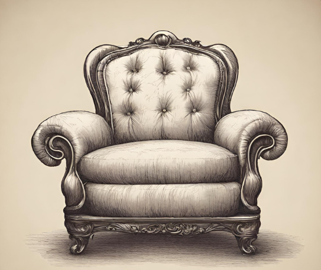
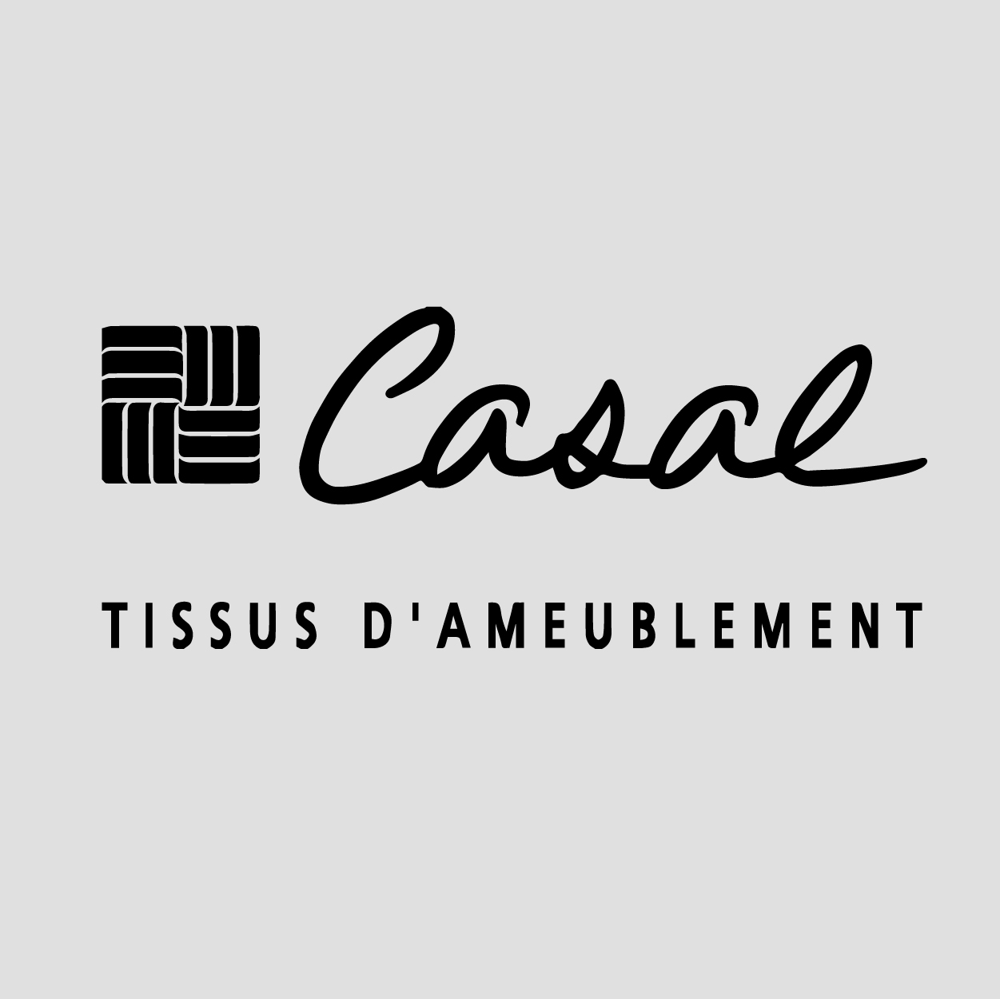
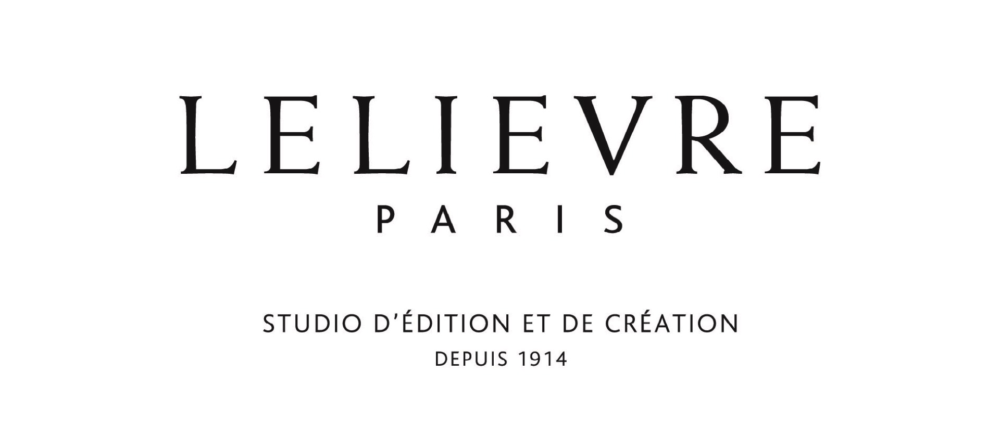
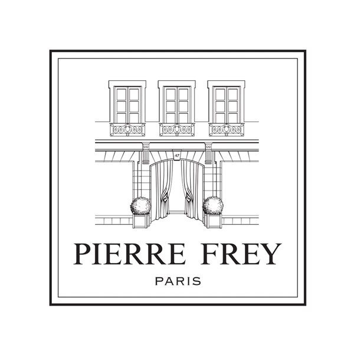
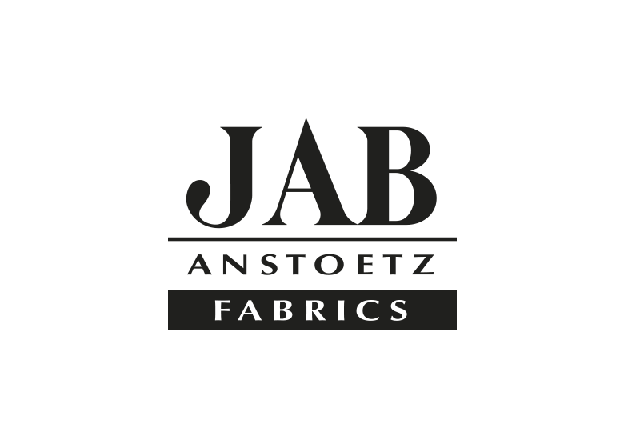

Réfection de chaises
Dépose de l'ancien garnissage, remise en tension et finitions cloutées pour conserver l'élégance de vos chaises.
Atelier Main é Merveille, je redonne vie à vos fauteuils, chaises et canapés grâce à une réfection sur-mesure : garnissage traditionnel, finitions main et sélection de tissus d'éditeur.

Restauration complète, modernisation ou création de pièces uniques : je prends soin de vos sièges avec des techniques éprouvées et des matériaux durables.
Dépose de l'ancien garnissage, remise en tension et finitions cloutées pour conserver l'élégance de vos chaises.

Réfection complète, rembourrage haute résilience et finitions passepoilées ou galons pour des canapés prêts à accueillir la famille.

Travail sur mesure pour vos bergères, chauffeuses, sièges design ou capitonnés avec des tissus haut de gamme.
Besoin de conseils pour un fauteuil à restaurer ou un projet sur-mesure ?
Découvrir toutes les prestations
Après une étude de votre siège, je vous propose un diagnostic détaillé et une sélection de matières adaptées à votre usage. Le garnissage traditionnel en crin végétal ou en mousse haute densité est réalisé dans les règles de l'art.
« Les trésors que peuvent produire nos mains, associés au savoir-faire, m'ont toujours émerveillée : c'est naturellement que Main é Merveille est né. »


Visualisez l'évolution de votre fauteuil : le slider permet de comparer rapidement le siège avant et après réfection.
Une sélection de maisons reconnues pour des finitions irréprochables.





Chaque projet est unique : nous échangeons sur votre quotidien, vos goûts et votre budget pour imaginer une pièce durable et confortable.
Vanessa, tapissière d'ameublement - Main é Merveille